10:00
Introduction
to Quarto
to Quarto
Overview
Introduction to Quarto: Welcome!
Course materials: https://github.com/USFWS/intro-to-quarto
Everyone should have completed the Prework
- Install RStudio and Quarto
- Get the exercises: https://github.com/USFWS/intro-to-quarto-exercises
Schedule
| Time | |
|---|---|
| 10:30 - 11:00 | Overview of Quarto |
| 12:30 - 13:30 | YAML metadata |
| 15:00 - 15:30 | Document body |
| 17:00 | Code blocks |
| 17:00 | Final exercise and wrap-up |
Instructors
Demos
Exercises
05:00
Need help!
- Raise your (virtual) hand during the exercises
- Talk to us during the break
The powers of
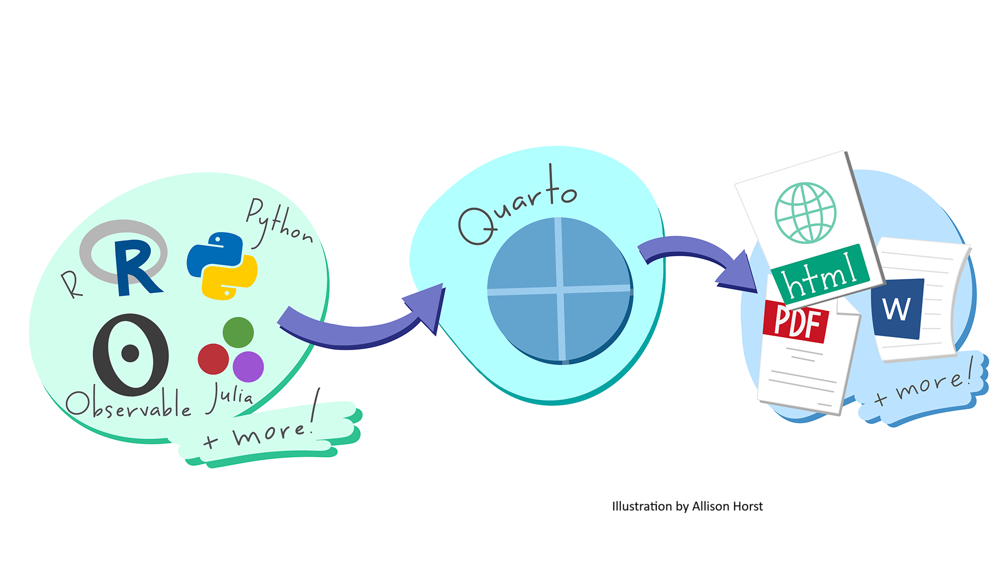
Outputs: Documents
Output: Websites
Outputs: Presentations
Quarto: Under the hood
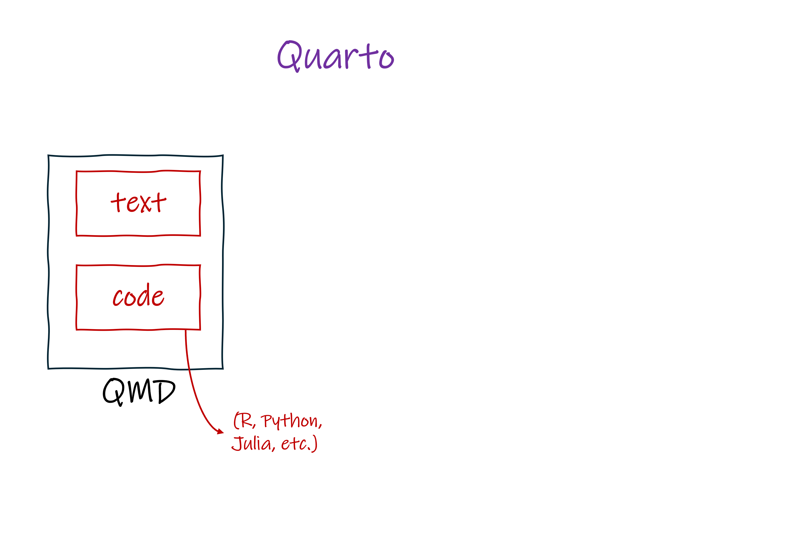
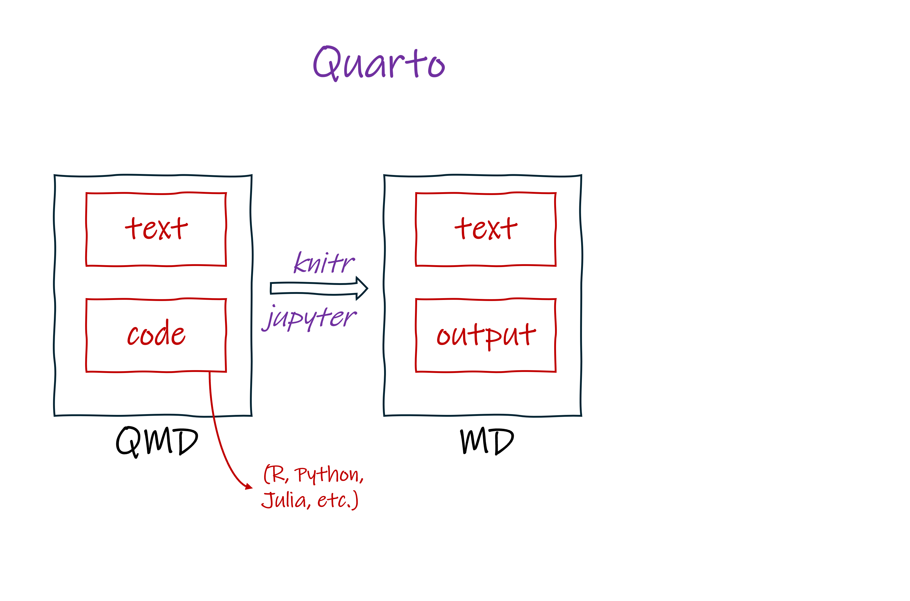
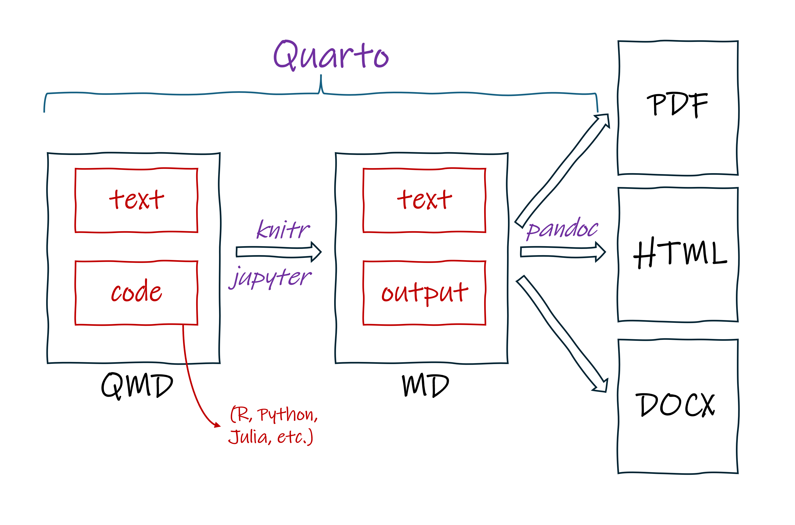
Why we Quarto
Weave together text, plots, tables, and statistics
Frequently re-create a standardized document
Create multiple formats of a document
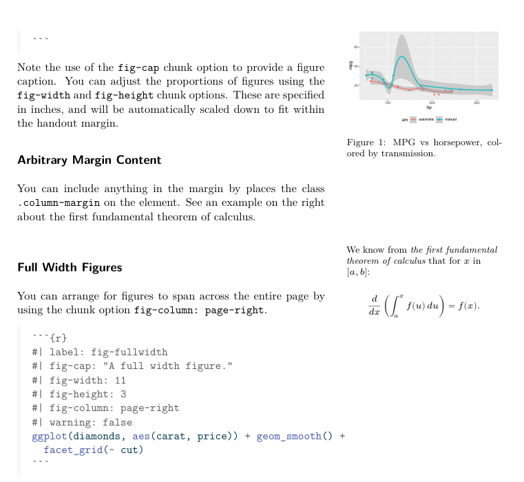
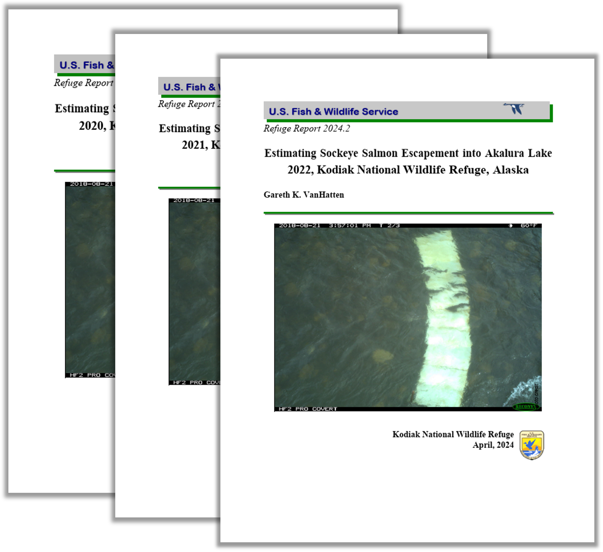
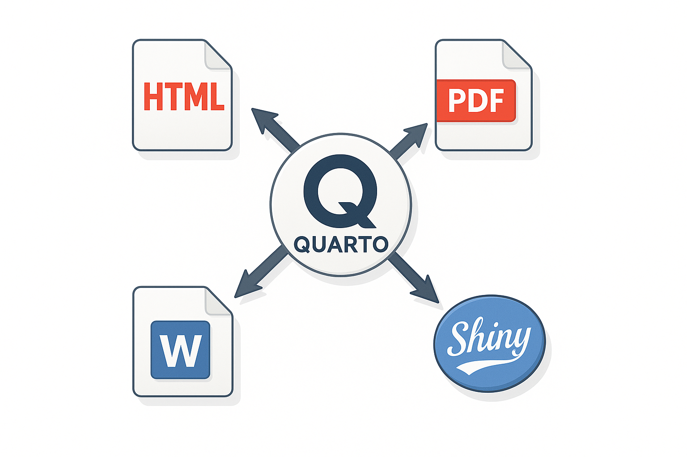
Why we Quarto
Use version control
Create dynamic and interactive visualizations
Generate comparable reports across multiple parameters (species, watershed, state)
Authoring in RStudio
Source editor
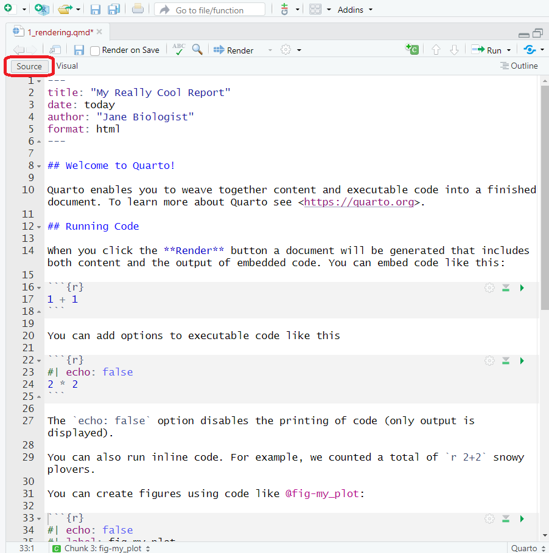
Visual editor
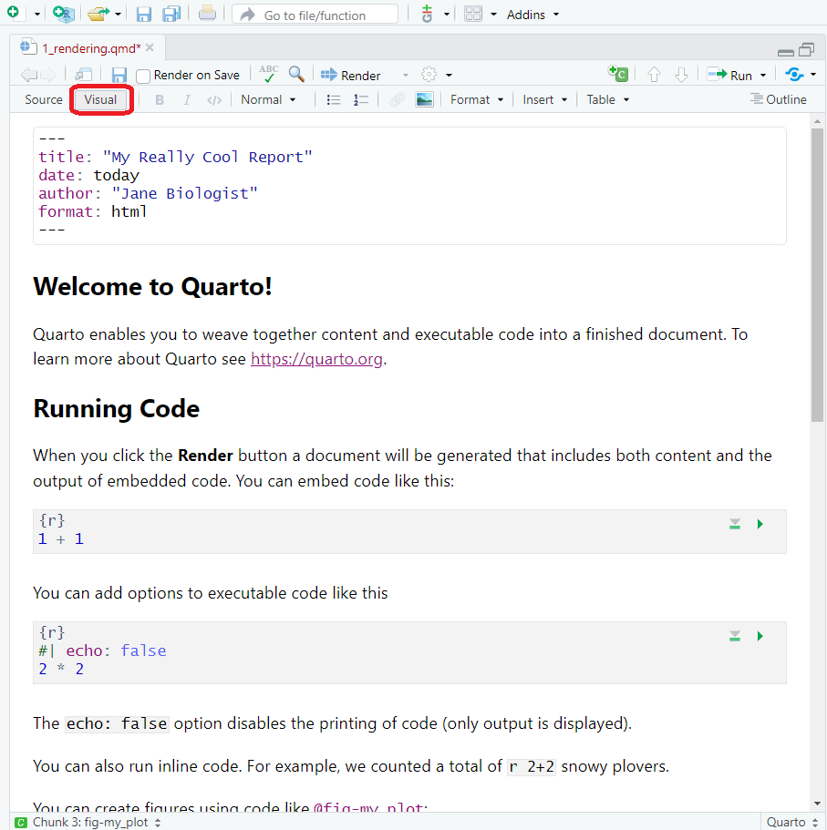
Three ways to render Quarto documents
Demo 1: Rendering
Exercise 1: Rendering
Solutions: Rendering
Anatomy of a Quarto File
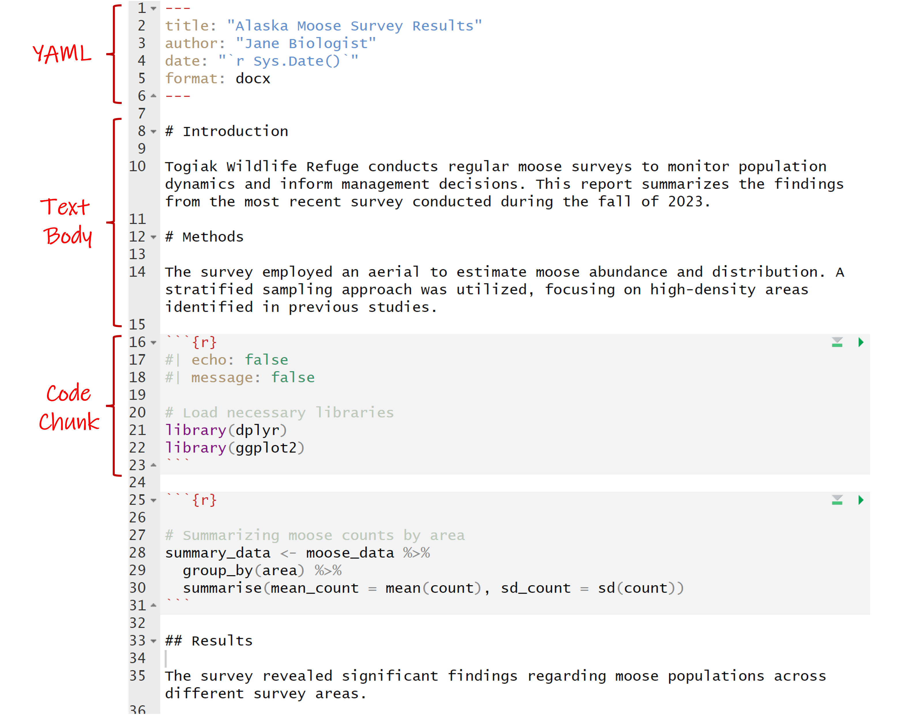
YAML
Yet Another Markup Language = document metadata!
- Starts and ends with “---”
- Uses key-value pairs:
key: valuethat can nest - Picky about spacing and indentations!
- Including options for:
- Title, authors, date
- File output(s) (e.g.,
html,docx) - Styling (e.g.,
theme,fig-width) - Parameters
- And more…
YAML metadata: Options
- Options are dependent on the file output (many options )
- Search the Quarto guidance within your specified file format:
YAML metadata: Options
Another option: Use your friendly assistant!
- Start a word and hit
tabto complete or … - Type
Ctrl+spaceto see available options.
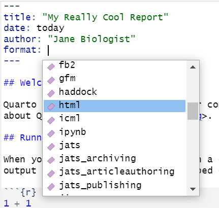
Exercise 2: YAML metadata
10:00
<<<<<<< HEAD ## Exercise 2 Solutions: YAML metadata {.exercise} ======= ##
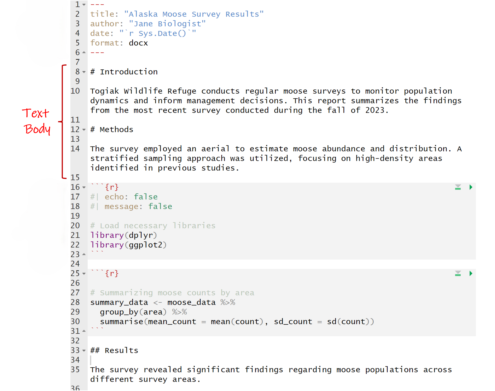
1e4365dc9f24c90a7e05eb997be964e6c2beb90d
Text body: Markdown
- Markdown is a markup language (e.g., HTML, teX, XML)
- Add syntax to the text to change it’s look
- Mix text with markup instructions
- Quarto uses Pandoc Markdown
- Inline or block elements
- Source (Markdown) vs. Visual (WYSIWYM)
Text body
Inline elements
- Individual words in a sentence
- Images, links, equations, or code in a sentence
Block elements
- Paragraphs or sections of a document
- Standalone images, equations, or figures
Inline elements: Text
Markdown
This is an example of how you could change
inline elements of text body Markdown in a FWS
report. You can make a word *italicized* or
**bold**. You can also display code, such as
`exp(10) + 1`. You can even ~~strikethrough~~
and make something a subscript~1~ or
superscript^1^. For more advanced customization,
you can use [spans]{.mark} to apply
custom-defined or built-in attributes to
[inline elements]{style="color:blue;"}.Output
This is an example of how you could change
inline elements of text body Markdown in a FWS report. You can make a word italicized or
bold. You can also display code, such as
exp(10) + 1. You can even strikethrough
and make something a subscript1 or superscript1. For more advanced customization, you can use spans to apply custom-defined or built-in attributes to inline elements.
Inline elements: Math
with LaTex!
Inline elements: Hyperlinks and images
Markdown
Output
For more information on how to use Quarto,
check out the Quarto webpage.
Here’s an image that is inline with
my text .
Block elements: Paragraphs
Markdown
Here's a paragraph. To separate it from the next
paragraph, you need to add one or more empty
lines.
This is a new paragraph. A paragraph is an
example of a block element. You can format each
paragraph (or a set of paragraphs) independently,
using divs to group regions of content and apply
styling.
::: {.callout-tip}
## Custom block element
Here's an example of a block with custom
formatting. Everything in this block has this
format. Specifically, this is a "callout block",
which is a built-in feature of Quarto that uses
div syntax.
:::Output
Here’s a paragraph. To separate it from the next paragraph, you need to add one or more empty lines.
This is a new paragraph. A paragraph is an
example of a block element. You can format each
paragraph (or a set of paragraphs) independently, using divs to group regions of content and apply styling.
Custom block element
Here’s an example of a block with custom formatting. Everything in this block has this format. Specifically, this is a “callout block”, which is a built-in feature of Quarto that uses div syntax.
Block elements: Headers
| Markdown Syntax | Output |
|---|---|
|
Header 1 |
|
Header 2 |
|
Header 3 |
|
Header 4 |
Block elements: Lists
Block elements: Math
with LaTex!
Markdown
Output
The Cauchy-Schwarz Inequality
\[ \left( \sum_{k=1}^n a_k b_k \right)^2 \leq \left( \sum_{k=1}^n a_k^2 \right) \left( \sum_{k=1}^n b_k^2 \right) \] is an upper bound on the inner product between two vectors in an inner product space in terms of the product of the vector norms.
Block elements: Images
Markdown
Output
Here’s a paragraph of text. We describe
something of great importance. So great,
in fact, that we need to also include an image.
Moving along, we will describe something else.
Exercise 3: Document body
10:00
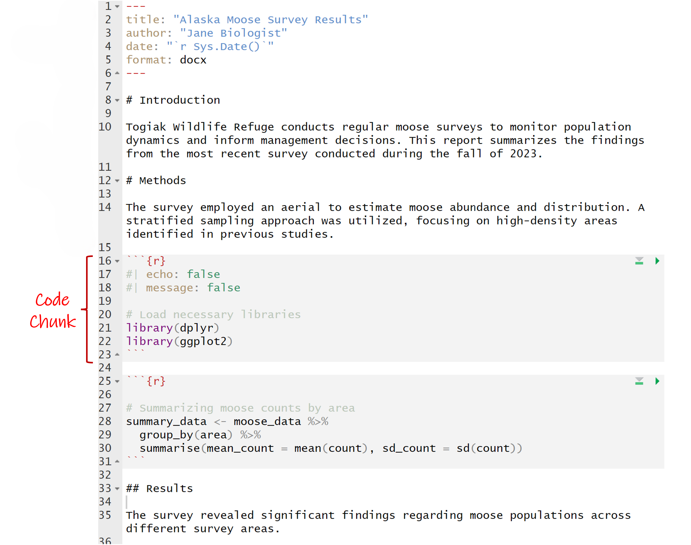
Code chunks: Pandoc
Code chunks: Quarto
Code chunks: Quarto
Another option: Use your friendly assistant!
- Use the built-in RStudio Code Chunk button or …
- Type
Ctrl+Alt+Ito add a code chunk.
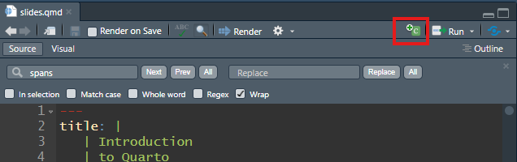
Code chunks: Options
- Code chunk surrounded by a “fence” of three backticks
``` - Specifying the language allows for syntax highlighting.
Code is displayed but not executedCode executes unless you specify as an option -> brackets{}Chunk options are a comma-seperated list (R syntax)Chunk options moved to a YAML in the cell after a hash pipe#|- Wider language support
- Easier to read
Execution options: Outputs
| Option | Description |
|---|---|
eval |
Evaluate the code chunk (if false, just echos the code into the output). |
echo |
Include the source code in output |
output |
Include the results of executing the code in the output (true, false, or asis to indicate that the output is raw markdown and should not have any of Quarto’s standard enclosing markdown). |
warning |
Include warnings in the output. |
error |
Include errors in the output. |
include |
Catch all for preventing any output (code or results) from being included (e.g. include: false suppresses all output from the code block). |
Tab Completion is your friend!
Execution options: Figures

Execution options: Figures
Execution options: Figures
Execution options: Figures
Execution options: Figures

Execution options: YAML
Execution options: YAML
Code chunks: Labels
- Identifies code chunks
- Makes debugging easier
- Can reference code chunk outputs in the text
Avoid using underscores (_) in labels and IDs.
This can cause problems when rendering to PDF with LaTeX.
Inline elements: Code
Markdown
Output
This is an example of how you could use code to calculate and report that species in the iris dataset with the longest sepal length is the virginica.
Exercise 4: Code
10:00
Exercise 5: Your turn
10:00
Wrap up
- Quarto is a powerful tool for creating scientific documents, presentations, and websites.
- Three basic components of a Quarto file control the rendered output:
- YAML metadata
- Text body
- Code chunks
- Once you understand the basics, the sky’s the limit!